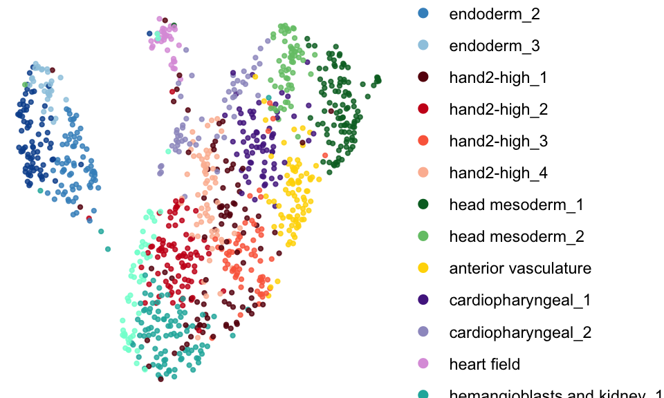
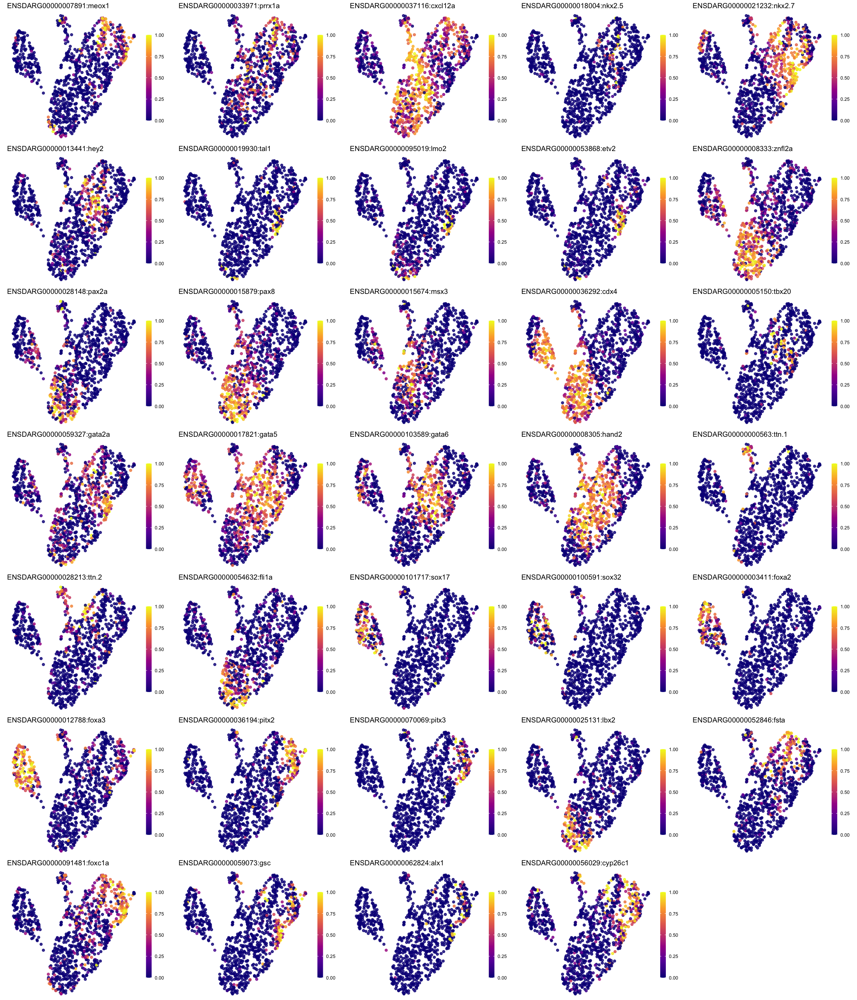
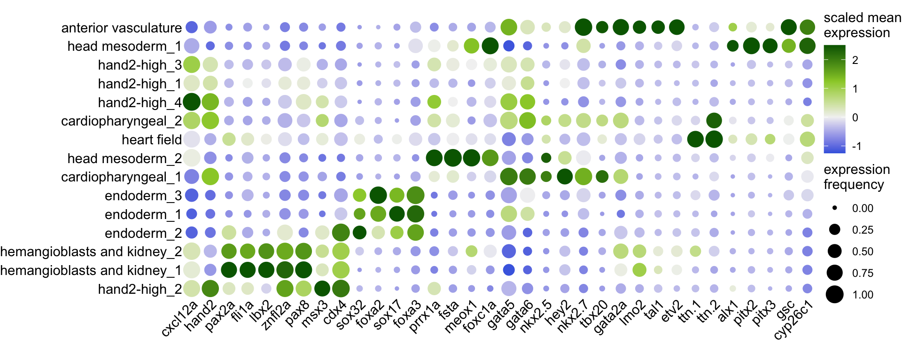
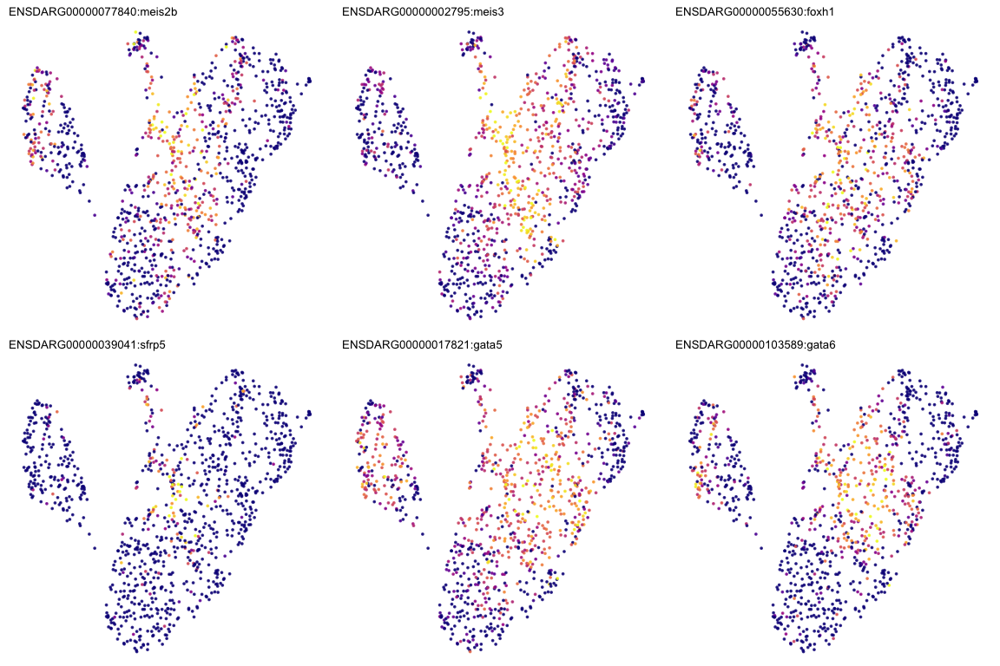
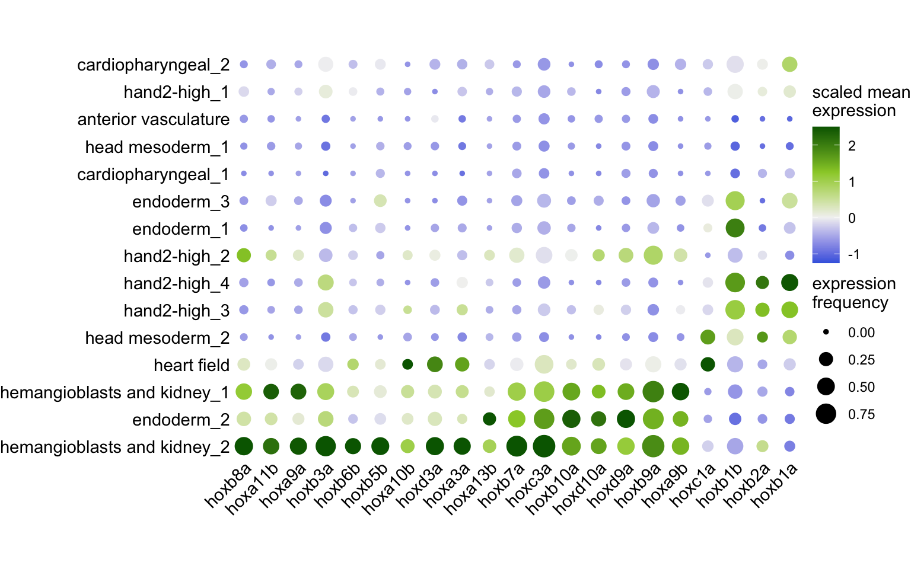
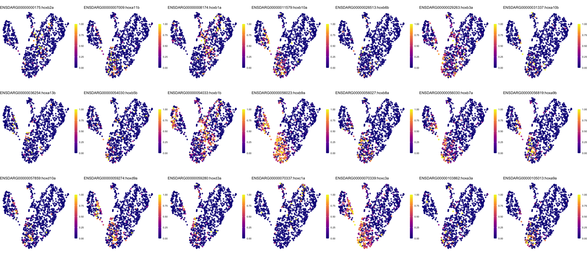
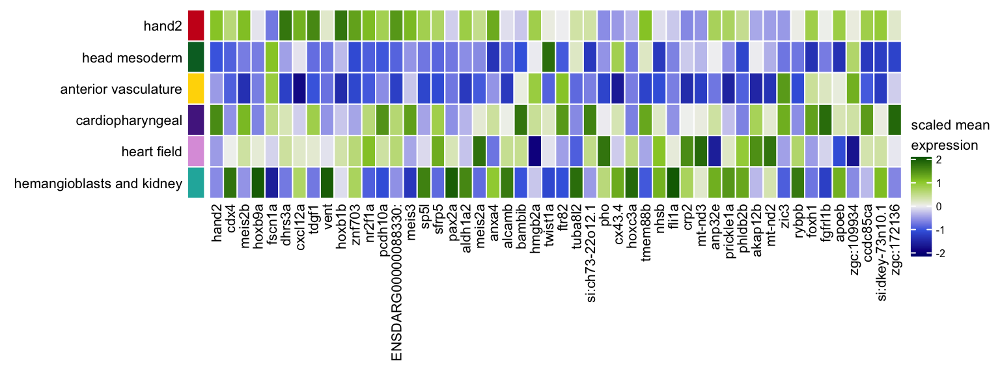

Last updated: 2020-11-11
Checks: 6 1
Knit directory: workflowr/
This reproducible R Markdown analysis was created with workflowr (version 1.6.2). The Checks tab describes the reproducibility checks that were applied when the results were created. The Past versions tab lists the development history.
The R Markdown file has unstaged changes. To know which version of the R Markdown file created these results, you’ll want to first commit it to the Git repo. If you’re still working on the analysis, you can ignore this warning. When you’re finished, you can run wflow_publish to commit the R Markdown file and build the HTML.
Great job! The global environment was empty. Objects defined in the global environment can affect the analysis in your R Markdown file in unknown ways. For reproduciblity it’s best to always run the code in an empty environment.
The command set.seed(20190529) was run prior to running the code in the R Markdown file. Setting a seed ensures that any results that rely on randomness, e.g. subsampling or permutations, are reproducible.
Great job! Recording the operating system, R version, and package versions is critical for reproducibility.
Nice! There were no cached chunks for this analysis, so you can be confident that you successfully produced the results during this run.
Great job! Using relative paths to the files within your workflowr project makes it easier to run your code on other machines.
Great! You are using Git for version control. Tracking code development and connecting the code version to the results is critical for reproducibility.
The results in this page were generated with repository version a82159f. See the Past versions tab to see a history of the changes made to the R Markdown and HTML files.
Note that you need to be careful to ensure that all relevant files for the analysis have been committed to Git prior to generating the results (you can use wflow_publish or wflow_git_commit). workflowr only checks the R Markdown file, but you know if there are other scripts or data files that it depends on. Below is the status of the Git repository when the results were generated:
Ignored files:
Ignored: .DS_Store
Ignored: README.html
Ignored: analysis/.DS_Store
Ignored: analysis/0-preprocessing_cache/
Ignored: analysis/1-clustering_cache/
Ignored: backup/
Ignored: code/.DS_Store
Ignored: data/.DS_Store
Ignored: data/Rehrauer18.csv
Ignored: data/UMI_counts_merged.rds
Ignored: data/cluster_anno.xlsx
Ignored: data/marker_genes.txt
Ignored: data/raw/
Ignored: data/~$cluster_anno.xlsx
Ignored: data/~$gure requests.docx
Ignored: data/~$marker_genes.xlsx
Ignored: figures/
Ignored: output/.DS_Store
Ignored: output/0-sce_prep.rds
Ignored: output/1-sce_clust.rds
Ignored: output/1-so_clust.rds
Ignored: output/2-sce_anno.rds
Ignored: output/2-so_anno.rds
Ignored: output/sce_anno.rds
Ignored: output/so_anno.rds
Unstaged changes:
Modified: analysis/0-preprocessing.Rmd
Modified: analysis/1-clustering.Rmd
Modified: analysis/2-annotation.Rmd
Deleted: analysis/about.Rmd
Modified: analysis/index.Rmd
Deleted: code/figures.R
Modified: code/utils.R
Note that any generated files, e.g. HTML, png, CSS, etc., are not included in this status report because it is ok for generated content to have uncommitted changes.
These are the previous versions of the repository in which changes were made to the R Markdown (analysis/2-annotation.Rmd) and HTML (docs/2-annotation.html) files. If you’ve configured a remote Git repository (see ?wflow_git_remote), click on the hyperlinks in the table below to view the files as they were in that past version.
| File | Version | Author | Date | Message |
|---|---|---|---|---|
| Rmd | b048d4d | HelenaLC | 2020-10-27 | initial commit |
| html | b048d4d | HelenaLC | 2020-10-27 | initial commit |
library(circlize)
library(ComplexHeatmap)
library(cowplot)
library(dplyr)
library(ggplot2)
library(readxl)
library(reshape2)
library(scater)
library(scran)
library(Seurat)
library(SingleCellExperiment)
library(tidyr)sce <- readRDS(file.path("output", "1-sce_clust.rds"))
so <- readRDS(file.path("output", "1-so_clust.rds"))
source(file.path("code", "utils.R"))
mgs_canonical [1] "meox1" "prrx1a" "cxcl12a" "nkx2.5" "nkx2.7" "hey2" "tal1"
[8] "lmo2" "etv2" "znfl2a" "pax2a" "pax8" "msx3" "cdx4"
[15] "tbx20" "gata2a" "gata4" "gata5" "gata6" "hand2" "ttn.1"
[22] "ttn.2" "fli1a" "sox17" "sox32" "foxa2" "foxa3" "pitx2"
[29] "pitx3" "lbx2" "fsta" "foxc1a" "gsc" "alx1" "cyp26c1"m <- match(mgs_canonical, rowData(sce)$symbol, nomatch = 0)
gs <- rownames(sce)[m]# load cluster annotations
anno <- read_xlsx(file.path("data", "cluster_anno.xlsx"))
anno <- setNames(anno$label, anno$cluster_id)
anno <- anno[as.character(sce$cluster_id)]
# set cluster IDs to manual annotation assignments
Idents(so) <- sce$cluster_id <- droplevels(
factor(anno, levels = names(cluster_pal)))# scale expression between 0 and 1 using
# (1%)- and (99%)-quantiles as boundaries
es <- .scale(logcounts(sce))
# prep. data.frame of reduced dimensions,
# cell metadata, and expression for plotting
dr <- do.call(cbind, reducedDims(sce))
df <- data.frame(t(es), dr, colData(sce),
i = seq_len(ncol(sce)), check.names = FALSE)
# randomize cell ordering
df <- df[sample(nrow(df), nrow(df)), ] # plot UMAP colored by cluster ID
(p <- ggplot(df, aes(x = UMAP_1, y = UMAP_2, col = cluster_id)) +
geom_point(size = 0.8, alpha = 0.8) +
scale_color_manual(NULL, values = cluster_pal) +
guides(color = guide_legend(override.aes = list(alpha = 1, size = 2))) +
theme_void() + theme(aspect.ratio = 1))
| Version | Author | Date |
|---|---|---|
| b048d4d | HelenaLC | 2020-10-27 |
ps <- lapply(gs, function(g) { df$expr <- df[, g]
ggplot(df, aes(x = UMAP_1, y = UMAP_2, col = expr)) +
geom_point(size = 0.8, alpha = 0.8) +
scale_color_viridis_c(NULL, option = "C") +
ggtitle(g) + theme_void(base_size = 6) +
theme(aspect.ratio = 1, legend.key.width = unit(2, "mm"))
})
plot_grid(plotlist = ps, ncol = 5)
Scale for 'colour' is already present. Adding another scale for 'colour',
which will replace the existing scale.(p <- .dotplot(so, gs))
fs <- c("meis2b", "meis3", "foxh1", "sfrp5", "gata5", "gata6")
m <- match(fs, rowData(sce)$symbol)
ps <- lapply(rownames(sce)[m], function(g) {
df$expr <- df[, g]
ggplot(df, aes(x = UMAP_1, y = UMAP_2, col = expr)) +
geom_point(size = 0, alpha = 0.8) +
scale_color_viridis_c(NULL, option = "C") +
ggtitle(g) + theme_void(base_size = 6) +
theme(aspect.ratio = 1,
legend.position = "none",
plot.title = element_text(size = 5))
})
(p <- plot_grid(plotlist = ps, ncol = 3))
is_hox <- grepl("hox", rowData(sce)$symbol)
hox_gs <- rownames(sce)[is_hox](p <- .dotplot(so, hox_gs))
ps <- lapply(hox_gs, function(g) { df$expr <- df[, g]
ggplot(df, aes(x = UMAP_1, y = UMAP_2, col = expr)) +
geom_point(size = 0.8, alpha = 0.8) +
scale_color_viridis_c(NULL, option = "C") +
ggtitle(g) + theme_void(base_size = 6) +
theme(aspect.ratio = 1, legend.key.width = unit(2, "mm"))
})
plot_grid(plotlist = ps, ncol = 7)
# merge into super-clusters
old <- levels(sce$cluster_id)
ss <- strsplit(old, "_|-")
new <- sapply(ss, .subset, 1)
m <- match(sce$cluster_id, old)
sce$merging_id <- factor(new[m], unique(new))
# exclude endoderm cluster
sub <- sce[, sce$merging_id != "endoderm"]
sub$merging_id <- droplevels(sub$merging_id)
# construct color palette for merged clusters
i <- sapply(levels(sub$merging_id), grep, names(cluster_pal))
i <- sapply(i, function(u) u[ceiling(length(u)/2)])
merging_pal <- setNames(cluster_pal[i], levels(sub$merging_id))# run DE analysis
res <- findMarkers(sub, sub$merging_id, pval.type = "some")
df <- data.frame(res$hand2)
# filter at FDR 5%, average logFC > 0
df <- df[df$FDR < 0.05, , drop = FALSE]
df <- df[df$summary.logFC > 0, , drop = FALSE]
df <- top_n(df, 50, summary.logFC)
df$gene <- rownames(df)
m <- match(df$gene, rownames(sce))
df$symbol <- rowData(sce)$symbol[m]
length(mgs <- df$gene)[1] 50# compute mean expression by cluster
names(mids) <- mids <- levels(sub$merging_id)
cs <- split(seq_len(ncol(sub)), sub$merging_id)
ms <- lapply(mids, function(m)
rowMeans(logcounts(sub[mgs, cs[[m]]])))
# use gene symbols as names
mat <- scale(t(do.call(cbind, ms)))
m <- match(mgs, df$gene)
colnames(mat) <- ifelse(
df$symbol[m] == "" | is.na(df$symbol[m]),
df$gene[m], df$symbol[m])
# construct row annotation
row_anno <- rowAnnotation(
simple_anno_size = unit(3.5, "mm"),
df = data.frame(merging_id = mids),
col = list(merging_id = merging_pal),
show_legend = FALSE,
gp = gpar(col = "white"),
show_annotation_name = FALSE,
annotation_legend_param = list(
title_gp = gpar(fontsize = 8),
labels_gp = gpar(fontsize = 6)))
# specify heatmap color function
rng <- max(abs(range(mat, na.rm = TRUE)))
rng <- ceiling(rng*0.5)/0.5
hm_pal <- c("navy", "royalblue", "grey95", "yellowgreen", "darkgreen")
hm_pal <- colorRamp2(seq(-rng, rng, l = 5), hm_pal)
(hm <- Heatmap(mat,
col = hm_pal,
cluster_rows = FALSE,
cluster_columns = FALSE,
row_names_side = "left",
rect_gp = gpar(col = "white"),
heatmap_legend_param = list(
title = "scaled mean\nexpression",
title_gp = gpar(fontsize = 8),
labels_gp = gpar(fontsize = 6)),
column_split = df$cluster,
row_title = NULL,
column_title = NULL,
left_annotation = row_anno,
row_names_gp = gpar(fontsize = 8),
column_names_gp = gpar(fontsize = 8)))
saveRDS(so, file.path("output", "2-so_anno.rds"))
saveRDS(sce, file.path("output", "2-sce_anno.rds"))
sessionInfo()R version 4.0.2 (2020-06-22)
Platform: x86_64-apple-darwin17.0 (64-bit)
Running under: macOS Catalina 10.15.7
Matrix products: default
BLAS: /Library/Frameworks/R.framework/Versions/4.0/Resources/lib/libRblas.dylib
LAPACK: /Library/Frameworks/R.framework/Versions/4.0/Resources/lib/libRlapack.dylib
locale:
[1] en_US.UTF-8/en_US.UTF-8/en_US.UTF-8/C/en_US.UTF-8/en_US.UTF-8
attached base packages:
[1] parallel stats4 grid stats graphics grDevices utils
[8] datasets methods base
other attached packages:
[1] RColorBrewer_1.1-2 tidyr_1.1.2
[3] Seurat_3.2.2 scran_1.16.0
[5] scater_1.16.2 SingleCellExperiment_1.10.1
[7] SummarizedExperiment_1.18.2 DelayedArray_0.14.1
[9] matrixStats_0.57.0 Biobase_2.48.0
[11] GenomicRanges_1.40.0 GenomeInfoDb_1.24.2
[13] IRanges_2.22.2 S4Vectors_0.26.1
[15] BiocGenerics_0.34.0 reshape2_1.4.4
[17] readxl_1.3.1 ggplot2_3.3.2
[19] dplyr_1.0.2 cowplot_1.1.0
[21] ComplexHeatmap_2.4.3 circlize_0.4.10
[23] workflowr_1.6.2
loaded via a namespace (and not attached):
[1] backports_1.1.10 plyr_1.8.6
[3] igraph_1.2.6 lazyeval_0.2.2
[5] splines_4.0.2 BiocParallel_1.22.0
[7] listenv_0.8.0 digest_0.6.26
[9] htmltools_0.5.0 viridis_0.5.1
[11] magrittr_1.5 tensor_1.5
[13] cluster_2.1.0 ROCR_1.0-11
[15] limma_3.44.3 globals_0.13.1
[17] colorspace_1.4-1 ggrepel_0.8.2
[19] xfun_0.18 crayon_1.3.4
[21] RCurl_1.98-1.2 jsonlite_1.7.1
[23] spatstat.data_1.4-3 spatstat_1.64-1
[25] survival_3.2-7 zoo_1.8-8
[27] glue_1.4.2 polyclip_1.10-0
[29] gtable_0.3.0 zlibbioc_1.34.0
[31] XVector_0.28.0 leiden_0.3.3
[33] GetoptLong_1.0.4 BiocSingular_1.4.0
[35] future.apply_1.6.0 shape_1.4.5
[37] abind_1.4-5 scales_1.1.1
[39] edgeR_3.30.3 miniUI_0.1.1.1
[41] Rcpp_1.0.5 viridisLite_0.3.0
[43] xtable_1.8-4 clue_0.3-57
[45] reticulate_1.17 dqrng_0.2.1
[47] rsvd_1.0.3 htmlwidgets_1.5.2
[49] httr_1.4.2 ellipsis_0.3.1
[51] ica_1.0-2 farver_2.0.3
[53] pkgconfig_2.0.3 uwot_0.1.8
[55] deldir_0.1-29 locfit_1.5-9.4
[57] labeling_0.4.2 tidyselect_1.1.0
[59] rlang_0.4.8 later_1.1.0.1
[61] munsell_0.5.0 cellranger_1.1.0
[63] tools_4.0.2 generics_0.0.2
[65] ggridges_0.5.2 evaluate_0.14
[67] stringr_1.4.0 fastmap_1.0.1
[69] goftest_1.2-2 yaml_2.2.1
[71] knitr_1.30 fs_1.5.0
[73] fitdistrplus_1.1-1 purrr_0.3.4
[75] RANN_2.6.1 nlme_3.1-150
[77] pbapply_1.4-3 future_1.19.1
[79] whisker_0.4 mime_0.9
[81] compiler_4.0.2 rstudioapi_0.11
[83] beeswarm_0.2.3 plotly_4.9.2.1
[85] png_0.1-7 spatstat.utils_1.17-0
[87] tibble_3.0.4 statmod_1.4.35
[89] stringi_1.5.3 lattice_0.20-41
[91] Matrix_1.2-18 vctrs_0.3.4
[93] pillar_1.4.6 lifecycle_0.2.0
[95] lmtest_0.9-38 GlobalOptions_0.1.2
[97] RcppAnnoy_0.0.16 BiocNeighbors_1.6.0
[99] data.table_1.13.2 bitops_1.0-6
[101] irlba_2.3.3 httpuv_1.5.4
[103] patchwork_1.0.1 R6_2.4.1
[105] promises_1.1.1 KernSmooth_2.23-18
[107] gridExtra_2.3 vipor_0.4.5
[109] codetools_0.2-18 MASS_7.3-53
[111] rprojroot_1.3-2 rjson_0.2.20
[113] withr_2.3.0 sctransform_0.3.1
[115] GenomeInfoDbData_1.2.3 mgcv_1.8-33
[117] rpart_4.1-15 rmarkdown_2.5
[119] DelayedMatrixStats_1.10.1 Rtsne_0.15
[121] git2r_0.27.1 shiny_1.5.0
[123] ggbeeswarm_0.6.0